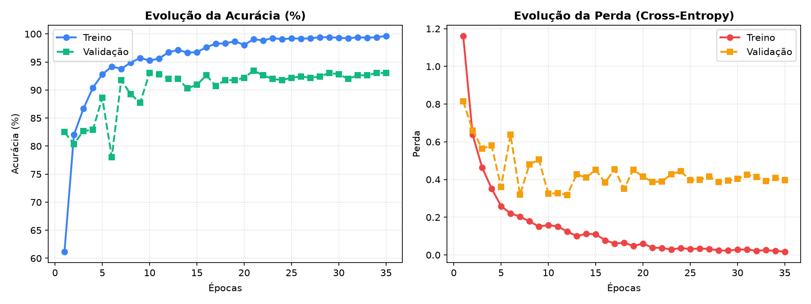
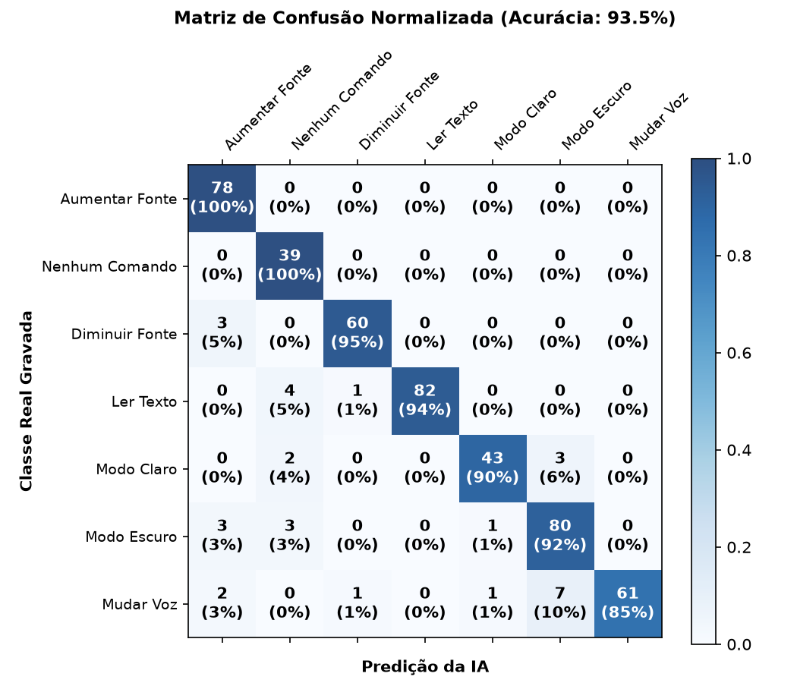

Reconhecimento de Voz & Simulador de Acessibilidade
Grave um comando de voz no seu microfone, envie um arquivo WAV ou teste com as amostras pré-carregadas para ver a IA em ação.
Clique no microfone para falar um comando de 1.5 segundos
⚡ Teste Rápido com Amostras Pré-gravadas
Comando Detectado pela IA
♿ Painel do Simulador de Acessibilidade
Quando um comando é previsto pela IA, a ação correspondente é disparada dinamicamente nesta interface.
Acionamento Manual dos Comandos
"ler texto": Dispara síntese de voz (Web Speech API) com marcação de leitura."aumentar fonte": Abre assistente vocal para falar quantidade (ex: "20%") ou eleva zoom."diminuir fonte": Abre assistente vocal para falar quantidade ou reduz o zoom."mudar voz": Alterna tom, velocidade e voz do narrador assistivo."modo claro": Ativa o tema visual claro para ambientes iluminados."modo escuro": Ativa o tema visual escuro com alto contraste e descanso visual.
Redes Neurais, Aprendizado Supervisionado e MFCCs
Entenda em profundidade os princípios matemáticos e computacionais que tornam o reconhecimento de fala possível.
🧠 Redes Neurais Artificiais (RNAs)
Inspiradas na estrutura do córtex biológico, as RNAs são aproximadores universais de funções. Cada neurônio artificial recebe sinais ponderados por pesos sinápticos (wi), soma uma constante de viés (b) e passa o resultado por uma função de ativação não-linear.
Camadas Utilizadas: Nossa arquitetura Convolucional 2D utiliza camadas Conv2D para capturar padrões espectrais locais, camadas MaxPooling2D para redução dimensional, Dropout para evitar co-adaptação e Dense final com ativação Softmax para distribuição de probabilidades.
🎯 Aprendizado Supervisionado
O modelo aprende a partir de pares rotulados de entrada e saída (X, y). Para cada amostra de áudio pré-processada, a rede calcula sua predição através de um ciclo estocástico:
Backpropagation & Adam: O erro é propagado de volta através da regra da cadeia do cálculo diferencial. O otimizador Adam calcula taxas de aprendizado adaptativas baseadas nos momentos de primeira e segunda ordem dos gradientes, atualizando os pesos em direção ao mínimo global da função de perda.
🎵 Coeficientes Cepstrais na Escala Mel (MFCCs)
O áudio cru em 1D é altamente redundante e sensível a variações de fase. Os MFCCs representam o padrão ouro no processamento de fala porque modelam com precisão o trato vocal humano, desconsiderando a frequência fundamental (pitch) e retendo a forma espectral (formantes).
A Escala Mel reflete a percepção do ouvido humano, que é muito mais sensível a pequenas variações em baixas frequências (< 1000 Hz) do que em altas frequências.
⚙️ O Pipeline de Extração de MFCC Passo a Passo
Como uma onda sonora de pressão no ar é transformada em uma matriz compacta 20 × 47 para a Rede Neural:
Pré-ênfase
Filtro passa-altas que amplifica altas frequências naturalmente atenuadas na fala: y[t] = x[t] - αx[t-1].
Enquadramento
Divide o áudio em janelas curtas de 32ms (estacionárias) e aplica Janela de Hamming para evitar vazamento espectral.
FFT (Fourier)
Aplica Transformada Rápida de Fourier para converter cada janela temporal no espectro de potência de frequências.
Filtros Mel
Aplica banco de filtros triangulares sobrepostos distribuídos na escala Mel, simulando a cóclea humana.
Logaritmo
Aplica o logaritmo das energias, emulando a resposta logarítmica da audição humana à intensidade sonora (decibéis).
DCT (Cepstrum)
Transformada Discreta do Cosseno descorrelaciona os filtros, gerando coeficientes independentes e compactos.
Dataset, Espectrogramas e Matrizes MFCC
Explore as gravações sonoras de cada comando e visualize a representação matricial 2D que alimenta a IA.
📂 Classes do Dataset
Selecione uma classe para ouvir a amostra de áudio e inspecionar sua matriz MFCC correspondente:
Parâmetros Técnicos de Extração:
- 🔹 Taxa de Amostragem (SR): 16.000 Hz
- 🔹 Duração Padronizada: 1.5 s (24.000 amostras)
- 🔹 Tamanho da FFT: 1.024 amostras
- 🔹 Hop Length: 512 amostras
- 🔹 Quantidade de MFCCs: 20 coeficientes
- 🔹 Dimensão de Entrada: (20, 47, 1)
Ler Texto (Comando 1)
Desempenho e Métricas do Modelo
Resultados obtidos no conjunto de teste independente (20% dos dados com validação estratificada).
📈 Curvas de Acurácia e Loss

🎯 Matriz de Confusão

📋 Relatório de Classificação por Comando de Voz
| Comando / Classe | Precisão (Precision) | Revocação (Recall) | F1-Score | Amostras de Teste |
|---|
Análise de Limitações e o Futuro da Acessibilidade
Reflexões sobre desafios do mundo real, ruído acústico, generalização e soluções para produção.
⚠️ Análise de Erros & Limitações da IA
-
Ruído de Fundo & Falsos Positivos: Em ambientes reais (rua, cafeteria, escritórios), ruídos abruptos podem ser confundidos com fonemas. A classe de background/silêncio foi essencial para absorver esses padrões e impedir ativações acidentais.
-
Variação de Sotaque e Velocidade: Pessoas de diferentes regiões do Brasil pronunciam vogais com cadências e formantes distintos. O Data Augmentation (pitch shift e time stretch) reduziu o risco de overfitting a timbres específicos.
-
Qualidade de Hardware: Microfones embutidos de laptops possuem filtros passa-alta agressivos que podem atenuar frequências graves, alterando os primeiros coeficientes MFCC.
♿ Impacto Social & Inclusão Digital
-
Pessoas com Deficiência Motora Severa: Para indivíduos com ELA, tetraplegia ou Parkinson avançado, a voz é frequentemente a única interface de entrada viável para navegar na web e interagir com computadores.
-
Baixa Visão e Fadiga Ocular: Comandos rápidos como "aumentar fonte" e "alto contraste" evitam que o usuário precise navegar em menus complexos ou atalhos de teclado inacessíveis.
-
Prevenção de LER/DORT: Trabalhadores e estudantes com dores crônicas ou lesões por esforço repetitivo se beneficiam de comandos de voz curtos para tarefas de leitura contínua.
🚀 Próximos Passos & Produção
-
Edge Computing com TFLite / WebAssembly: Exportar a rede neural para rodar 100% no navegador do usuário via WebAssembly ou WebGPU, garantindo privacidade absoluta (sem envio de áudio para servidores) e latência inferior a 5ms.
-
Detecção de Palavra de Ativação (Wake-Word): Implementar uma palavra de ativação contínua (ex: "Assistente, ler texto") usando modelos de streaming baseados em RNN/Conformer.
-
Expansão de Vocabulário: Adicionar comandos compostos de acessibilidade como "rolar página", "clicar no link" e "modo foco".